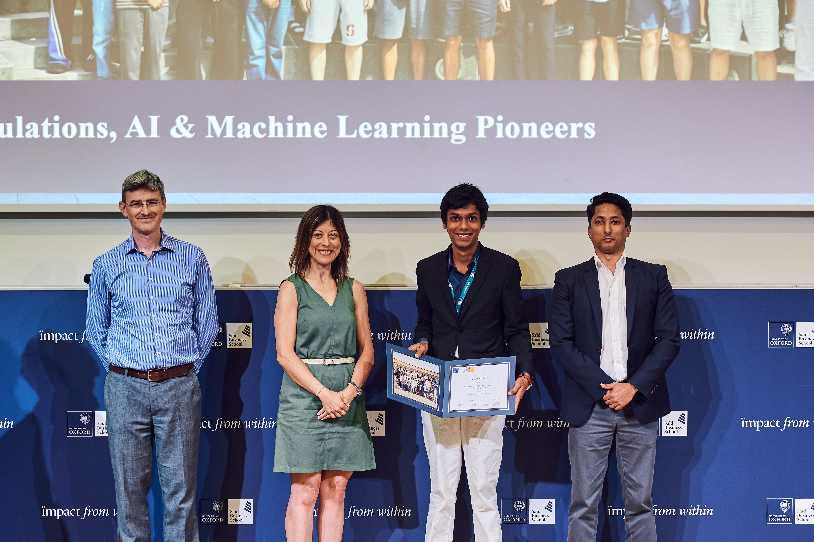

University
of Oxford
Saïd Business School — two weeks of Artificial Intelligence and Machine Learning.
"Impact from within"
— Saïd Business School
images/oxford.jpg
900 × 1200 or larger
Attending the AI and ML Summer Programme at the University of Oxford has been a privilege. I got to scratch the tip of the iceberg and get a taste of the rigour that comes from being a university student.
In this programme, I explored Artificial Intelligence in a holistic manner. We discussed two major aspects: the technical one, where we downloaded models from Hugging Face and played with parameters to understand neural networks, and the financial one, where we learned about the AI stack and investing in the AI boom and bubble. I really enjoyed my time with our tutors, who helped push me above and beyond the prescribed curriculum. I tried adjusting many hyperparameters, like temperature and max tokens, trying to develop a deeper understanding.
I really enjoyed my time at the University. Travelling alone to another country and discovering new places has all been an amazing experience. I was most overjoyed when I learned about the rich history of the place and the university, and tried new things like punting and watching my first play, Macbeth!
All these experiences really helped develop and foster my curiosity towards the subject and the field.